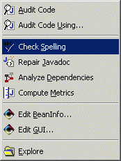
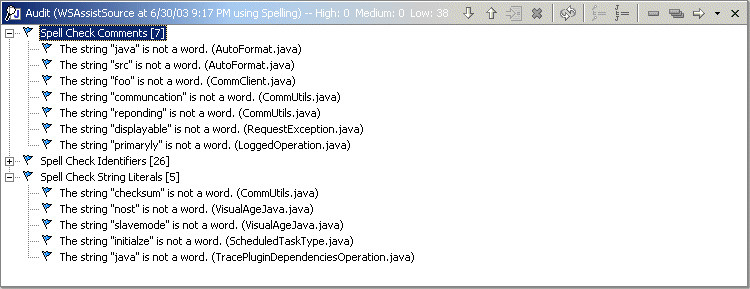

Spell Checking
Available only under Application Developer 5.1, 6.0, 7.0 and Eclipse 3.2 and above
|  | Each
time the menu item If you would like to configure the "Spelling" audit rule set, access the CodePro | Audit | Rules preference page, select the "Spelling" audit rule set from the Audit Rule Set drop down list and modify the settings as you see fit. Spell Check audit rules are provided to: |
